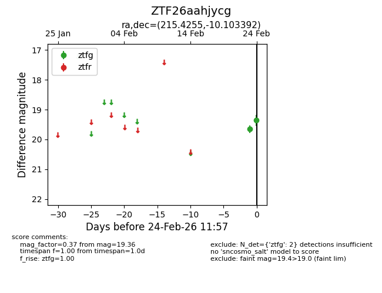
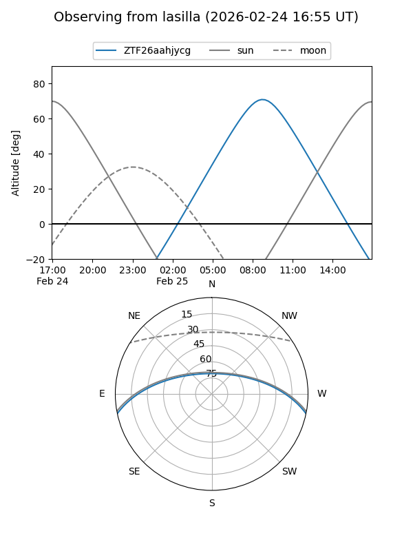
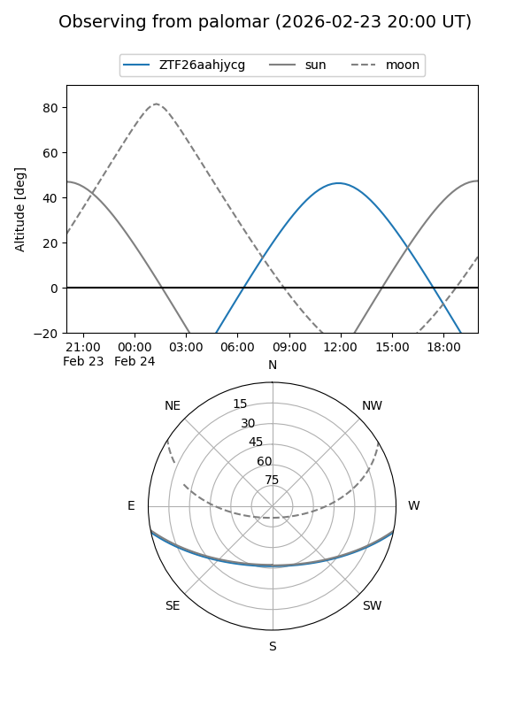

ZTF26aahjycg
Target ZTF26aahjycg at 2026-02-24 11:58
Aliases and brokers:
FINK: link
Lasair: link
ALeRCE: link
alt names
ZTF26aahjycg (ztf,fink_ztf)
Coordinates:
equatorial (ra, dec) = 215.4255,-10.10339
equatorial (HMS+DMS) = 14:21:42.13,-10:06:12.21
galactic (l, b) = (336.4375,+46.81208)
Flags:
Photometry:
last ztfg=19.36
2 ztfg detections
Lightcurve

Visibility


Additional plots